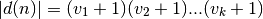

Additional Support for Highly divisible triangular number¶
If the prime factorization of n is given by
then the number of positive divisors of n, is

and each of the divisors, , has the form
where for each
import math
Compute all factors
def factors( x ):
for i in range(2,int(math.sqrt(x))+1):
if x % i == 0:
return [i] + factors( x // i )
return [x]
Compute all divisors
def divisors( x ):
return [ i for i in range(1,x//2+1) if x%i == 0 ] + [x]
Compute the binary representation as a sequence of 1, 0 vaules.
def binary( x, fill=0 ):
bits= []
while x != 0:
bits.append( x % 2 )
x = x // 2
while len(bits) < fill:
bits.append( 0 )
return bits
product of factors using a filter mask
def prodFilt( factors, mask ):
r= 1
for p,q in zip( factors, mask ):
if q:
r *= p
return r
Use the binary representation to compute divisors
def divisors2( x ):
f= factors(x)
count= 2**len(f)
divSet= set()
for i in range(count):
iFlags= binary(i,len(f))
prod= prodFilt( f, iFlags )
if prod <= x:
divSet.add( prod )
return sorted(divSet)
Demonstrate that this works for the first 500 triangle numbers.
if __name__ == "__main__":
for i in range(1,500):
ti= (i*(i+1))//2
d= divisors(ti)
f= factors(ti)
print( i, ti, f, len(f), len(f)+len(set(f)), d, len(d) ) # , divisors(ti), divisors2(ti) )
assert divisors(ti) == divisors2(ti)